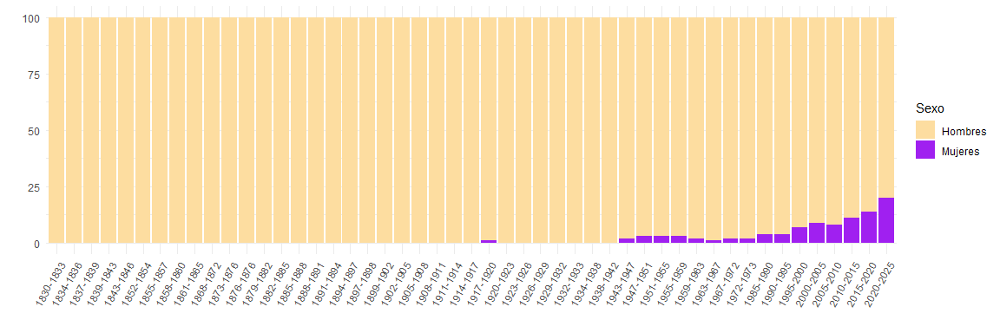

puy: políticos uruguayos
Nicolás Schmidt, Antonio Cardarello, Alfonso Castiglia, Fabricio Carneiro, Diego Luján, Felipe Monestier, UMAD1.


Descripción
Contiene un conjunto de datos original de políticos uruguayos que ocuparon diversos cargos públicos: Presidentes, Ministros, Senadores, Diputados, Alcaldes, Concejales Municipales, Ministros de Corte Electoral entre otros. Esta base de datos permite seguir la trayectoria de un político a lo largo de su carrera y los distintos cargos que fue ocupando. Asimismo, es de gran utilidad para tener la identificación partidaria de los políticos en el tiempo para poder empalmar con otros conjuntos de datos en donde la unidad de análisis sea el político. El ejemplo inmediato de esto último es la base de datos que se genera a partir de los diarios de sesión del parlamento con el paquete speech().
El manual del paquete se puede encontrar aquí.
En la foto del logo aparece José Batlle y Ordóñez hablando desde la plataforma del vagón de un tren durante una gira política en el departamento de Treinta y Tres en 19192.
Instalación
remotes::install_github("Nicolas-Schmidt/puy")Contenido del paquete
Conjuntos de datos
politicos
| Variable | Descripción |
|---|---|
politico |
Nombre completo del politico en el formato: ‘APELLIDO, Nombre’ |
partido |
Partido al que pertenece el político en el cargo. |
fecha_inicio |
Fecha de inicio en el que comienza la gestión en el cargo. |
fecha_inicio |
Fecha de fin en la que finaliza la gestión en el cargo. |
legislatura |
Legislatura en la que ocupa el cargo el político. Esta variable es para los cargos que tienen secuencia legislativa (Legisladores, Ministros, Presidente, Vicepresidente…). |
cargo |
Tipo de cargo. |
status |
Si es Titular, Suplente, Nominal… |
circunscripcion |
Distrito al que pertenece el legislador (esto aplica a los Diputados). |
sexo |
Sexo. |
Actualmente la base cuenta con la siguiente informacion:
| Políticos | Periodo |
|---|---|
| Presidentes y Vicepresidentes | 1830 - 2020 |
| Legisladores | 1830 - 2020 |
| Ministros de Estado | 1904 - 2020 |
| Intendentes | 1925 - 2020 |
| Candidato Presidente y Vicepresidente3 | 1958 - 2020 |
| Ministros Corte Electoral | 1985 - 2020 |
| Alcaldes y Concejales | 2010 - 2020 |
Funciones
| Función | Descripción |
|---|---|
buscar_puy() |
Permite buscar políticos en la base puy::politicos. |
add_party() |
Permite agregar la etiqueta partidaria de cada legislador a un diario de sesión en el formato que devuelve la función speech_build() del paquete de R speech(). |
Ejemplos
library(puy)
buscar_puy(nombre = "Mujica")
#>
#> Los politicos encontrados con ese nombre son:
#>
#> MUJICA CORDANO, Jose
#> MUJICA, Asdrubal R.
#> MUJICA, Gonzalo
#> MUJICA, Jorge
#> MUJICA, Jose
#>
#> # A tibble: 15 x 9
#> politico partido fecha_inicio fecha_fin legislatura cargo status
#> <chr> <chr> <date> <date> <dbl> <chr> <chr>
#> 1 MUJICA COR~ Frente A~ 1995-02-15 2000-02-14 44 Diputado Titul~
#> 2 MUJICA COR~ Frente A~ 2000-02-15 2005-02-14 45 Senador Titul~
#> 3 MUJICA COR~ Frente A~ 2005-02-15 NA 46 Senador Titul~
#> 4 MUJICA, Go~ Frente A~ 2005-02-15 NA 46 Diputado Titul~
#> 5 MUJICA, Go~ Frente A~ 2015-02-15 NA 48 Diputado Titul~
#> 6 MUJICA COR~ Frente A~ 2015-02-15 NA 48 Senador Titul~
#> 7 MUJICA, Go~ Frente A~ 2010-02-15 NA 47 Diputado Titul~
#> 8 MUJICA COR~ Frente A~ 2020-02-15 NA 49 Senador Titul~
#> 9 MUJICA, Go~ Partido ~ 2020-02-15 NA 49 Diputado Titul~
#> 10 MUJICA COR~ Frente A~ 2005-03-01 2008-03-03 46 Ministro Ga~ Titul~
#> 11 MUJICA, Jo~ Partido ~ 2015-03-01 NA 48 Concejal Titul~
#> 12 MUJICA, As~ Partido ~ 2015-03-01 NA 48 Concejal Titul~
#> 13 MUJICA COR~ Frente A~ 2010-03-01 2015-03-01 47 Presidente ~ Titul~
#> 14 MUJICA, Jo~ Frente A~ 2009-10-25 2009-10-25 46 Candidato P~ <NA>
#> 15 MUJICA, Jo~ Frente A~ 2009-06-28 2009-06-28 46 Candidato P~ <NA>
#> # ... with 2 more variables: circunscripcion <chr>, sexo <dbl>
buscar_puy(nombre = "Mujica Cordano")
#>
#> El politico encontrado con ese nombre es:
#>
#> MUJICA CORDANO, Jose
#>
#> # A tibble: 7 x 9
#> politico partido fecha_inicio fecha_fin legislatura cargo status
#> <chr> <chr> <date> <date> <dbl> <chr> <chr>
#> 1 MUJICA COR~ Frente A~ 1995-02-15 2000-02-14 44 Diputado Titul~
#> 2 MUJICA COR~ Frente A~ 2000-02-15 2005-02-14 45 Senador Titul~
#> 3 MUJICA COR~ Frente A~ 2005-02-15 NA 46 Senador Titul~
#> 4 MUJICA COR~ Frente A~ 2015-02-15 NA 48 Senador Titul~
#> 5 MUJICA COR~ Frente A~ 2020-02-15 NA 49 Senador Titul~
#> 6 MUJICA COR~ Frente A~ 2005-03-01 2008-03-03 46 Ministro Gan~ Titul~
#> 7 MUJICA COR~ Frente A~ 2010-03-01 2015-03-01 47 Presidente d~ Titul~
#> # ... with 2 more variables: circunscripcion <chr>, sexo <dbl>
buscar_puy("roballo")
#>
#> El politico encontrado con ese nombre es:
#>
#> ROBALLO DE PREVITALI, Alba
#>
#> # A tibble: 7 x 9
#> politico partido fecha_inicio fecha_fin legislatura cargo status
#> <chr> <chr> <date> <date> <dbl> <chr> <chr>
#> 1 ROBALLO DE P~ Partido C~ NA NA 38 Senador Titul~
#> 2 ROBALLO DE P~ Partido C~ NA NA 39 Senador Titul~
#> 3 ROBALLO DE P~ Partido C~ NA NA 40 Senador Titul~
#> 4 ROBALLO DE P~ Frente Am~ NA NA 41 Senador Suple~
#> 5 ROBALLO DE P~ Frente Am~ NA NA 43 Senador Suple~
#> 6 ROBALLO DE P~ Partido C~ 1968-05-03 1968-06-13 40 Ministro ~ Titul~
#> 7 ROBALLO DE P~ Partido C~ 1955-02-15 1959-02-14 37 Concejal ~ Titul~
#> # ... with 2 more variables: circunscripcion <chr>, sexo <dbl>
## ~~~~~~~~~~~~~~~~~~~~~~~~~~~~~~~~~~~~~~~~~~~~~~~~~~~~~~~~~~~~~~~~~~~~~~~
# Legisladores que tienen apellido iniciado por la letra 'W'
## ~~~~~~~~~~~~~~~~~~~~~~~~~~~~~~~~~~~~~~~~~~~~~~~~~~~~~~~~~~~~~~~~~~~~~~~
legis_W <- buscar_puy(nombre = "W")
#>
#> Los politicos encontrados con apellido iniciado en 'W' son:
#>
#> WETTSTEIN, Carlos
#> WILLIMAN, Claudio
#> WILLIMAN, Jose Claudio
#> WILSON, Arturo
#>
## ~~~~~~~~~~~~~~~~~~~~~~~~~~~~~~~~~~~~~~~~~~~~~~~~~~~~~~~~~~~~~~~~~~~~~~~
# legisladores que tienen la expresion lacalle en alguna parte del nombre
## ~~~~~~~~~~~~~~~~~~~~~~~~~~~~~~~~~~~~~~~~~~~~~~~~~~~~~~~~~~~~~~~~~~~~~~~
lacalle <- buscar_puy(nombre = "lacalle", contiene = TRUE)
#>
#> Los politicos encontrados con ese nombre son:
#>
#> LACALLE HERRERA, Luis Alberto
#> LACALLE POU, Luis Alberto
#> POU DE LACALLE, Julia
#>
Ejemplo con speech::speech_build()
library(speech)
url <- "http://bit.ly/35AUVF4"
text1 <- speech::speech_build(file = url, compiler = TRUE)
text1
#> # A tibble: 11 x 7
#> legislator legislature chamber date id speech sex
#> <chr> <int> <chr> <date> <chr> <chr> <dbl>
#> 1 ABDALA 48 COMISION ~ 2019-09-17 35AU~ SEÑOR ABDALA. Voto ~ 1
#> 2 ASTI 48 COMISION ~ 2019-09-17 35AU~ SEÑOR ASTI. Obviame~ 1
#> 3 AVIAGA 48 COMISION ~ 2019-09-17 35AU~ SEÑORA AVIAGA. Pido~ 0
#> 4 BORDABERRY 48 COMISION ~ 2019-09-17 35AU~ SEÑOR BORDABERRY. P~ 1
#> 5 GOÑI 48 COMISION ~ 2019-09-17 35AU~ SEÑOR GOÑI. Pido la~ 1
#> 6 LAZO 48 COMISION ~ 2019-09-17 35AU~ SEÑORA LAZO. Voto p~ 0
#> 7 MAHIA 48 COMISION ~ 2019-09-17 35AU~ SEÑOR MAHIA. Pido l~ 1
#> 8 MERONI 48 COMISION ~ 2019-09-17 35AU~ SEÑOR MERONI. Voto,~ 1
#> 9 PEREYRA 48 COMISION ~ 2019-09-17 35AU~ SEÑORA PEREYRA. Con~ 0
#> 10 TOURNE 48 COMISION ~ 2019-09-17 35AU~ SEÑORA TOURNE. Voy ~ 0
#> 11 VIERA 48 COMISION ~ 2019-09-17 35AU~ SEÑOR VIERA. Voto p~ 1
floor_speech <- add_party(speech = text1)
dplyr::glimpse(floor_speech)
#> Rows: 11
#> Columns: 12
#> $ legislator <chr> "ABDALA", "ASTI", "AVIAGA", "BORDABERRY", "GOÑI", "LAZO", ~
#> $ legislature <int> 48, 48, 48, 48, 48, 48, 48, 48, 48, 48, 48
#> $ chamber <chr> "COMISION PERMANENTE", "COMISION PERMANENTE", "COMISION PE~
#> $ date <date> 2019-09-17, 2019-09-17, 2019-09-17, 2019-09-17, 2019-09-17~
#> $ id <chr> "35AUVF4", "35AUVF4", "35AUVF4", "35AUVF4", "35AUVF4", "3~
#> $ speech <chr> "SEÑOR ABDALA. Voto por la señora legisladora Daisy Tourné~
#> $ sex <dbl> 1, 1, 0, 1, 1, 0, 1, 1, 0, 0, 1
#> $ legislator2 <chr> "ABDALA, Pablo", "ASTI, Alfredo", "AVIAGA, Carol", "BORDAB~
#> $ party <chr> "Partido Nacional", "Frente Amplio", "Partido Nacional", "~
#> $ party_acron <chr> "PN", "FA", "PN", "PC", "PN", "FA", "FA", NA, "FA", "FA", ~
#> $ indicator <int> 1, 1, 1, 1, 2, 3, 1, NA, 1, 1, 1
#> $ words <int> 400, 46, 107, 963, 100, 103, 128, 12, 12, 111, 8
floor_speech[c(1,2,7:12)]
#> # A tibble: 11 x 8
#> legislator legislature sex legislator2 party party_acron indicator words
#> <chr> <int> <dbl> <chr> <chr> <chr> <int> <int>
#> 1 ABDALA 48 1 ABDALA, Pablo Parti~ PN 1 400
#> 2 ASTI 48 1 ASTI, Alfredo Frent~ FA 1 46
#> 3 AVIAGA 48 0 AVIAGA, Carol Parti~ PN 1 107
#> 4 BORDABERRY 48 1 BORDABERRY, ~ Parti~ PC 1 963
#> 5 GOÑI 48 1 GOÑI ROMERO,~ Parti~ PN 2 100
#> 6 LAZO 48 0 LAZO, Sandra Frent~ FA 3 103
#> 7 MAHIA 48 1 MAHIA, Jose ~ Frent~ FA 1 128
#> 8 MERONI 48 1 <NA> <NA> <NA> NA 12
#> 9 PEREYRA 48 0 PEREYRA, Sus~ Frent~ FA 1 12
#> 10 TOURNE 48 0 TOURNE, Daisy Frent~ FA 1 111
#> 11 VIERA 48 1 VIERA, Tabare Parti~ PC 1 8
## ~~~~~~~~~~~~~~~~~~~~~~~~~~~~~~
## Diario de sesión NO compilado
## ~~~~~~~~~~~~~~~~~~~~~~~~~~~~~~
url %>%
speech::speech_build() %>%
puy::add_party() %>%
subset(select = c(1,2,7:12)) %>% # se seleccionan variables que se agregan con add_party()
print(n = Inf)
#> # A tibble: 24 x 8
#> legislator legislature sex legislator2 party party_acron indicator words
#> <chr> <int> <dbl> <chr> <chr> <chr> <int> <int>
#> 1 ABDALA 48 1 ABDALA, Pablo Parti~ PN 1 311
#> 2 ABDALA 48 1 ABDALA, Pablo Parti~ PN 1 10
#> 3 ABDALA 48 1 ABDALA, Pablo Parti~ PN 1 79
#> 4 ASTI 48 1 ASTI, Alfredo Frent~ FA 1 46
#> 5 AVIAGA 48 0 AVIAGA, Carol Parti~ PN 1 5
#> 6 AVIAGA 48 0 AVIAGA, Carol Parti~ PN 1 9
#> 7 AVIAGA 48 0 AVIAGA, Carol Parti~ PN 1 93
#> 8 BORDABERRY 48 1 BORDABERRY, ~ Parti~ PC 1 5
#> 9 BORDABERRY 48 1 BORDABERRY, ~ Parti~ PC 1 10
#> 10 BORDABERRY 48 1 BORDABERRY, ~ Parti~ PC 1 16
#> 11 BORDABERRY 48 1 BORDABERRY, ~ Parti~ PC 1 578
#> 12 BORDABERRY 48 1 BORDABERRY, ~ Parti~ PC 1 241
#> 13 BORDABERRY 48 1 BORDABERRY, ~ Parti~ PC 1 113
#> 14 GOÑI 48 1 GOÑI ROMERO,~ Parti~ PN 2 6
#> 15 GOÑI 48 1 GOÑI ROMERO,~ Parti~ PN 2 5
#> 16 GOÑI 48 1 GOÑI ROMERO,~ Parti~ PN 2 89
#> 17 LAZO 48 0 LAZO, Sandra Frent~ FA 3 103
#> 18 MAHIA 48 1 MAHIA, Jose ~ Frent~ FA 1 5
#> 19 MAHIA 48 1 MAHIA, Jose ~ Frent~ FA 1 16
#> 20 MAHIA 48 1 MAHIA, Jose ~ Frent~ FA 1 107
#> 21 MERONI 48 1 <NA> <NA> <NA> NA 12
#> 22 PEREYRA 48 0 PEREYRA, Sus~ Frent~ FA 1 12
#> 23 TOURNE 48 0 TOURNE, Daisy Frent~ FA 1 111
#> 24 VIERA 48 1 VIERA, Tabare Parti~ PC 1 8
Exploración de base de datos puy::politicos
¿Cuántas mujeres ocuparon cargos políticos?
politicos %>%
select(politico, legislatura, cargo, sexo) %>%
unique() %>%
mutate(cargo = ifelse(str_detect(cargo, "^Ministro"), "Ministro", cargo)) %>%
group_by(cargo) %>%
summarise(Hombres = sum(sexo),
Mujeres = n() - sum(sexo),
Prop_mujeres = paste0(round(Mujeres / n() *100), "%")) %>%
print(n = Inf)
#> # A tibble: 22 x 4
#> cargo Hombres Mujeres Prop_mujeres
#> <chr> <dbl> <dbl> <chr>
#> 1 Alcalde 159 36 18%
#> 2 Candidato Consejo Nacional de Gobierno 172 5 3%
#> 3 Candidato Precandidato Presidente 94 4 4%
#> 4 Candidato Presidente 107 2 2%
#> 5 Candidato Vicepresidente 93 16 15%
#> 6 Concejal 636 147 19%
#> 7 Concejal Departamental 233 1 0%
#> 8 Consejero Departamental 219 0 0%
#> 9 Diputado 5327 145 3%
#> 10 Intendente 312 14 4%
#> 11 Intendente Interventor 48 0 0%
#> 12 Miembro del Consejo Nacional de Gobierno 37 0 0%
#> 13 Miembro del Triunvirato 3 0 0%
#> 14 Ministro 584 18 3%
#> 15 Presidente Corte Electoral 5 0 0%
#> 16 Presidente de la Republica 62 0 0%
#> 17 Presidente del Concejo Departamental 59 0 0%
#> 18 Presidente del Consejo Nacional de Gobierno 13 0 0%
#> 19 Secretario Corte Electoral 5 3 38%
#> 20 Senador 1624 53 3%
#> 21 Vicepresidente Corte Electoral 5 0 0%
#> 22 Vicepresidente de la Republica 16 2 11%¿En qué legislatura las mujeres ocuparon más cargos legislativos?
library(tidyverse)
legis_mujeres <-
politicos %>%
filter(cargo %in% c("Diputado", "Senador")) %>%
select(politico, cargo, legislatura, sexo) %>%
distinct() %>%
group_by(legislatura) %>%
summarise(Hombres = round(sum(sexo)/length(sexo) * 100),
Mujeres = round(100 - Hombres)) %>%
merge(., legislaturas[, c("legislatura", "periodo")], by = "legislatura") %>%
select(4,2,3) %>%
pivot_longer(cols = 2:3, names_to = "Sexo", values_to = "Porcentaje")
ggplot(data = legis_mujeres, aes(x = periodo , y = Porcentaje, fill = Sexo)) +
geom_bar(stat = "identity") +
scale_fill_manual(values = c("#FDDDA0", "purple")) +
theme_minimal() +
guides(x = guide_axis(angle = 60)) +
labs(x = "", y = "")
Notas
1 Unidad de Métodos y Acceso a Datos, Facultad de Ciencias Sociales, Universidad de la República (UMAD-FCS-UdelaR)
2 Foto extraida de “Crónica General del Uruguay”, Washington Reyes Abadie, Andrés Vázquez Romero, Banda Oriental, Montevideo, Uruguay, 2000, p.399. La diagramación del logo es obra de Nadia Repetto (narepetto@gmail.com)
3 Se incorporó a la base los datos de candidaturas presidenciales y de precandidaturas presidenciales (elecciones internas) a los efectos de tener información más precisa sobre las carreras políticas. Estos políticos son la única excepción en la base que en esas instancias no ocuparon ningún cargo sino que se postularon.